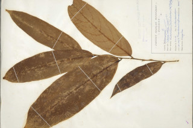

Images :


| Habit : | Trees up to 20 m tall. |
| Leaves : | Leaves simple , alternate , distichous ; stipules linear - lanceolate , to 0.6 cm long, in pairs, brown tomentose ; petiole 0.5-0.6 cm long, terete , brown tomentose ; lamina 14-27 x 3-8.5 cm, oblong , apex gradually or abruptly acuminate , base asymmetric , margin usually entire or distantly serrate , subcoriaceous , densely brown tomentose on midrib beneath, glabrous above; midrib flat above; secondary_nerves 7-10 pairs; tertiary_nerves horizontally reticulo-percurrent . |
| Inflorescence / Flower : | Flowers unisexual , dioecious , in axillary or lateral clusters on older branches . |
| Fruit and Seed : | Drupe , globose , brown tomentose , stalked . |